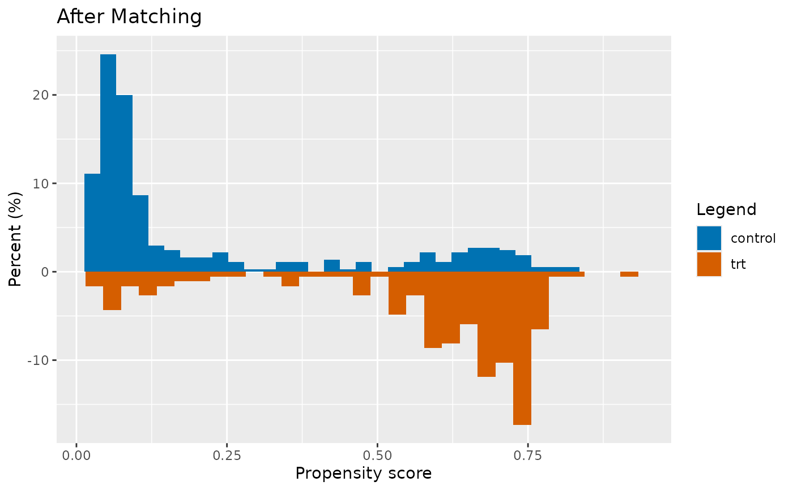

Plot a histogram from a MatchIt object
plot_propensity_score_histogram.Rdplot_propensity_score_histogram plots a mirrored histogram which
enables visual inspection of the distribution of propensity scores
in the treatment vs control group.
Usage
plot_propensity_score_histogram(
matchit_obj,
trt_control_var,
trt_label,
control_label,
is_after_matching = TRUE,
num_bins = 30
)Arguments
- matchit_obj
(matchit object) A MatchIt::matchit object from the MatchIt R package
- trt_control_var
(quosure) variable that stores the treatment/control grouping
- trt_label
(character) value for treatment group in trt_control_var (e.g. video_consult_grp)
- control_label
(character) value for control group in trt_control_var (e.g. face_to_face_grp)
- is_after_matching
(logical) TRUE for after-matching plot, FALSE for before-matching plot
- num_bins
(numeric) number of bins of the histogram
Examples
library(MatchIt)
MatchIt::matchit(
treat ~ age + educ + race + married + nodegree + re78,
data = lalonde %>% dplyr::mutate(trt_control = ifelse(treat == 1, "trt", "control")),
method = "nearest",
ratio = 2
) %>%
plot_propensity_score_histogram(trt_control, "trt", "control",
is_after_matching = TRUE, num_bins = 30
)
